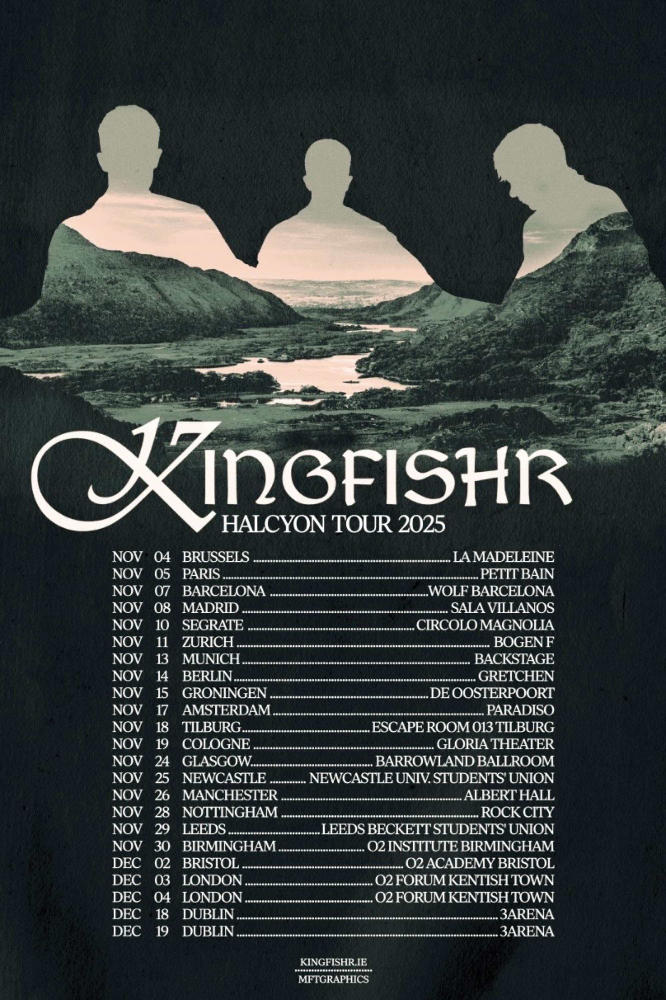

Kingfishr
Halcyon Tour 2025
I've seen Kingfishr live four times by now. It's always a good show. To see them grow from playing Cyprus Avenue to a few hundred people a couple years back to selling out multiple nights in the 3Arena has been really impressive. They've really done well for themselves, most recently touring America. It's always been a goal of mine to design for them one day.
For this poster, I took a frame from their Kingfishr - The Road To Dublin (Mini Documentary), about their 3Olympia show that I went to back in 2024. I specifically used this frame from it.